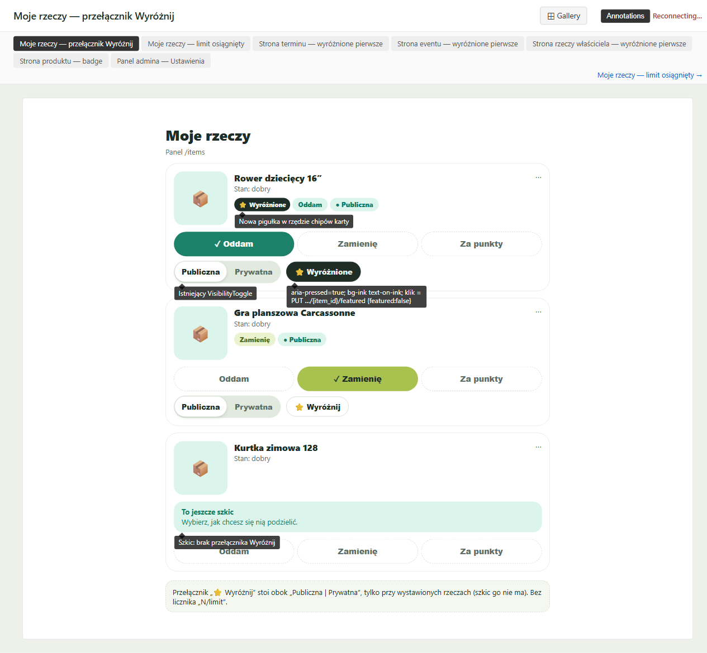
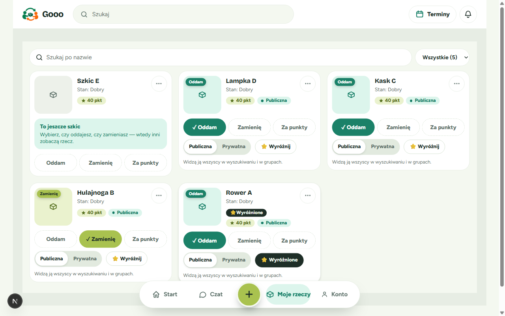
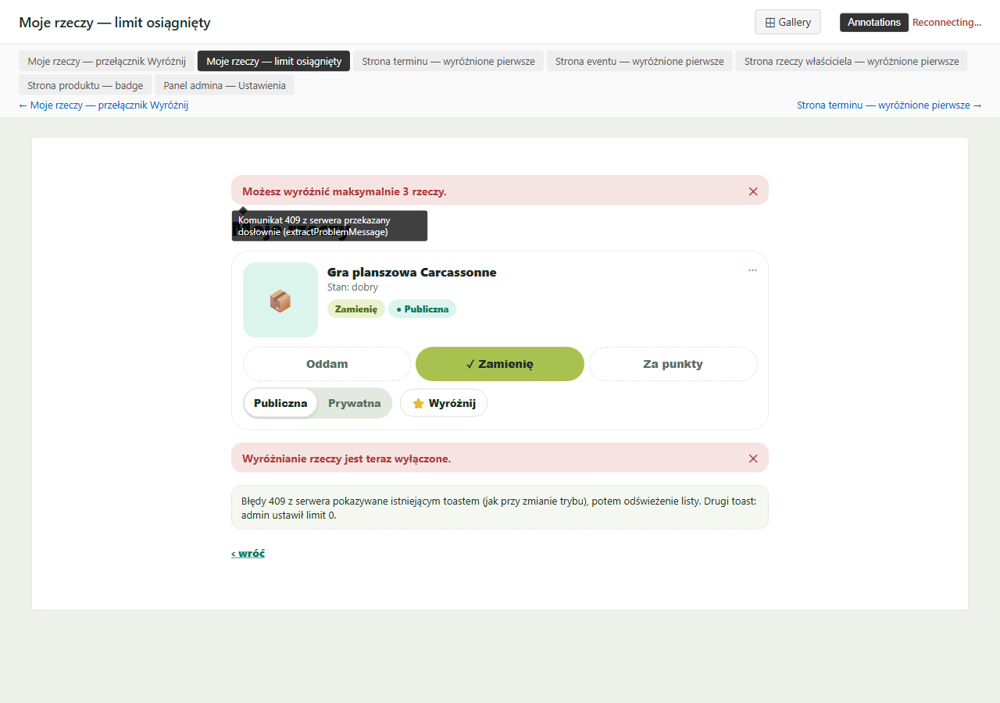
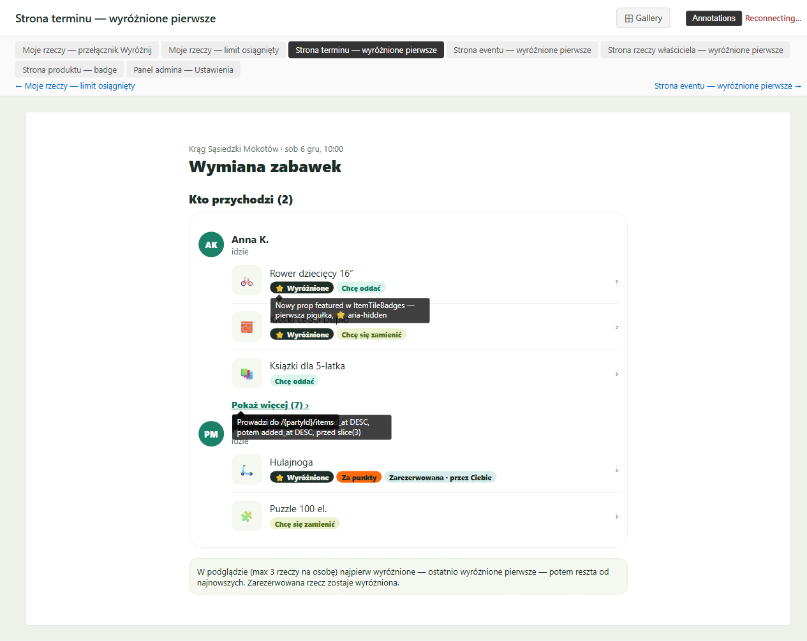
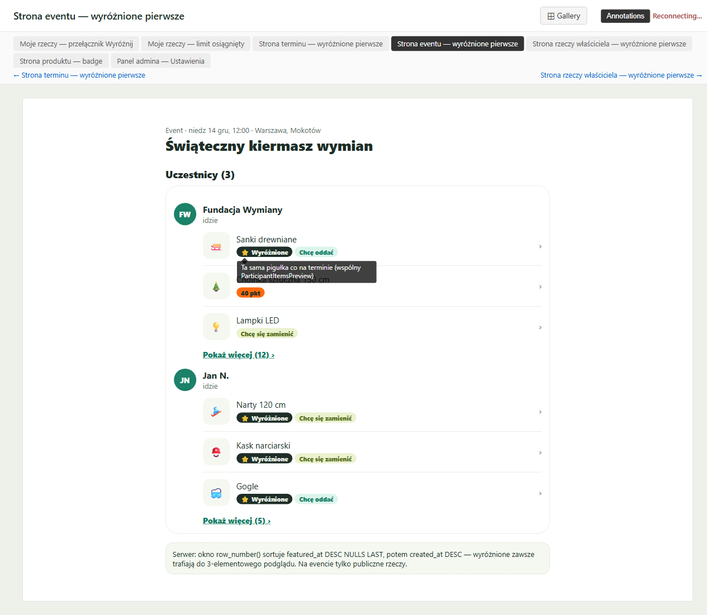
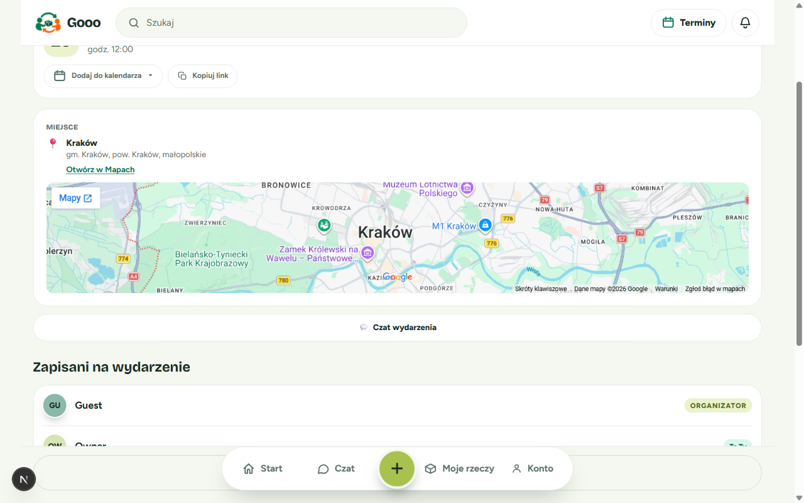
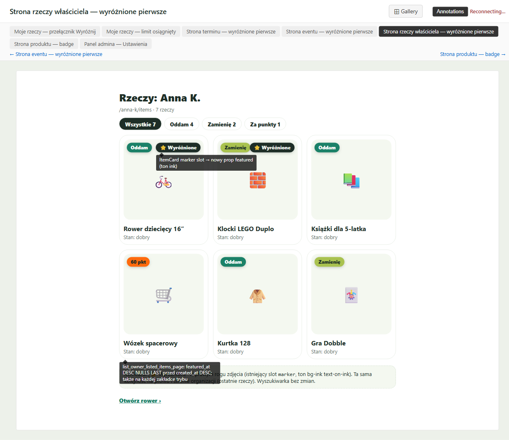
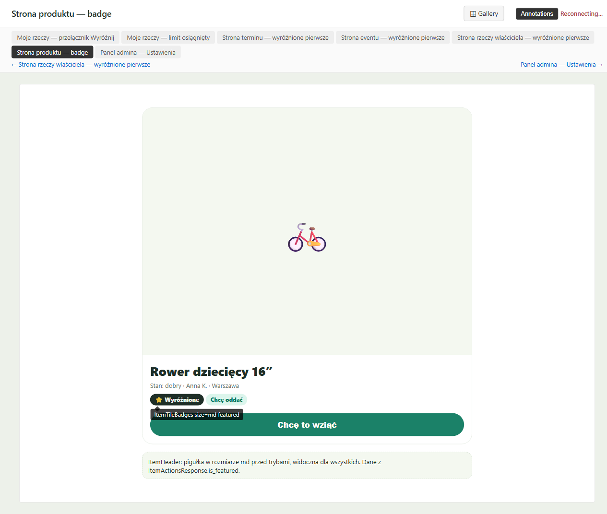
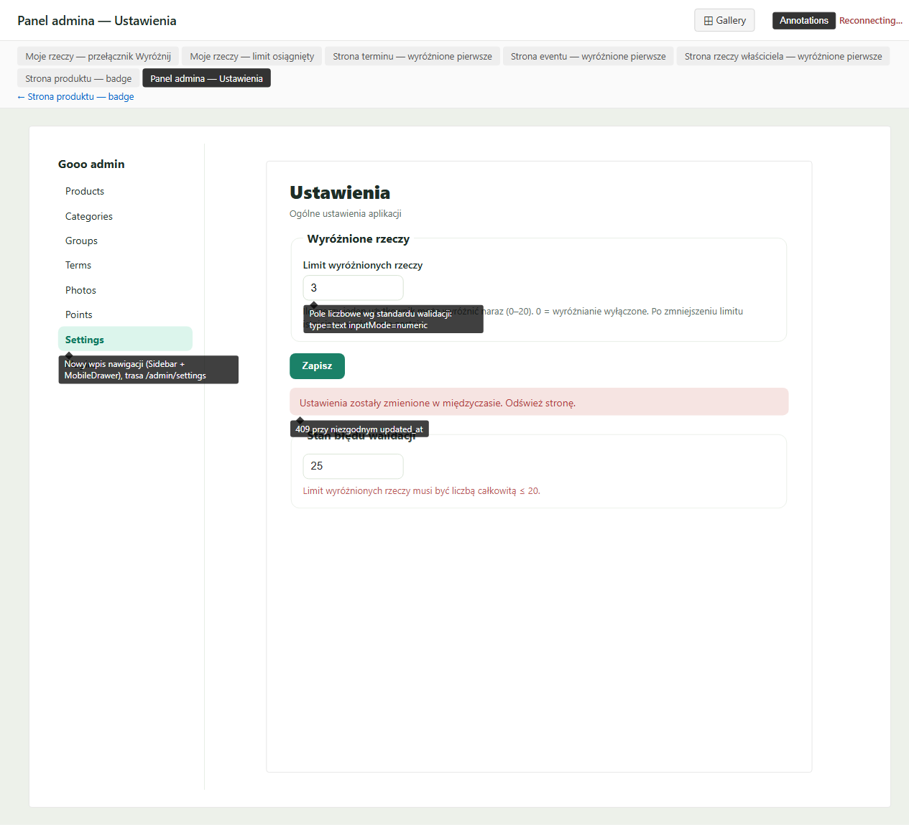
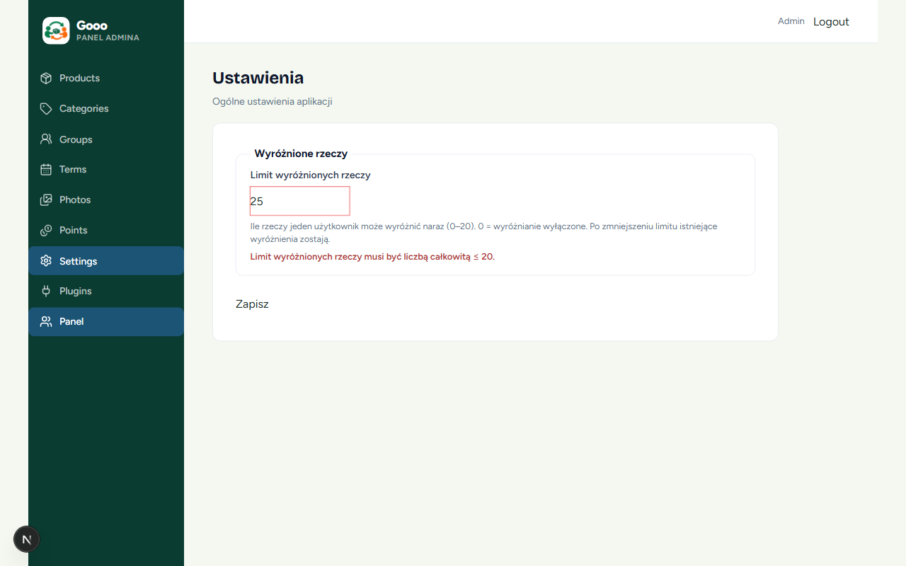

screen:my-items-featured-toggle — ✓ Match
The toggle sits beside „Publiczna | Prywatna”, only on listed items. The chip „⭐ Wyróżnione” comes first (it wraps on the narrower card). Ink when on, no N/limit counter.


screen:my-items-featured-errors — ⚠ Minor deviation
The copy matches (the cap uses N = 1 singular). It renders in the bottom ToastPill instead of the red top toast; this is intentional per spec.


screen:term-page-featured-first — ✓ Match
Lister row, 3-item preview with featured first and the pill before the mode pill, then „Pokaż więcej”.


screen:event-page-featured-first — ✓ Match
Participant rows and the 3-item window with the featured item first. The oldest featured listing is pulled in.


screen:owner-items-featured-first — ⚠ Minor deviation
Featured first in every tab, right-corner ink badge. On the app's 2-column grid the badge covers the left mode badge („Oddar…”).


screen:product-page-featured-badge — ⚠ Minor deviation
The md pill comes before the mode pill for every viewer. The pill row sits above the title (existing ItemHeader layout); the mockup has it below.


screen:admin-settings — ⚠ Minor deviation
Copy, fieldset, help text, validation, 409 and nav position all match. The input and button render unstyled, the same as on the existing /admin/points page (pre-existing env styling; see 23).


Components — ✓ Match ×3
- component:featured-pill: first pill,
bg-ink text-on-ink, ⭐ aria-hidden (DOM-checked; 13). - component:item-card-featured-marker: marker slot, ink tone, ⭐ aria-hidden; the overlap is counted under owner items (08).
- component:featured-toggle:
type=button, aria-pressed, stable „Wyróżnij: {name}” label, ink when on (05).